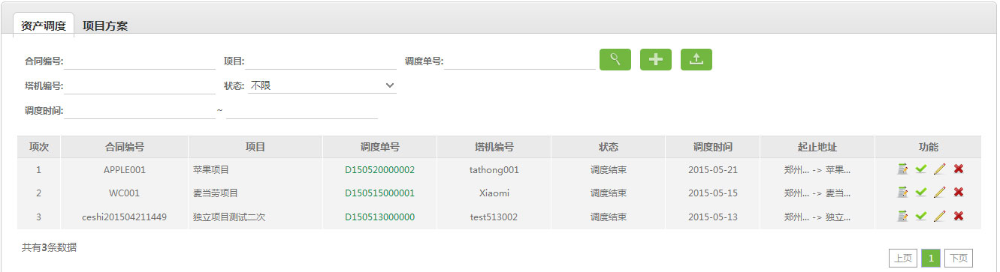

4.1、资产调度

 进行调度单查询，查询条件：项目名称、塔机编号、调度单号、调度单状态、调度时间；
进行调度单查询，查询条件：项目名称、塔机编号、调度单号、调度单状态、调度时间；
2、 新增调度单,
新增调度单, 导出查询的所有调度单内容;
导出查询的所有调度单内容;
3、 确认调度、
确认调度、 编辑、和
编辑、和 删除调度单资料;
删除调度单资料;
业务背景：
一、调度塔机、零部件的作业采用流程管理的方式来实施。调度单状态共有5个:
1. 待签核：新增一张调度单的初始状态，经过上级主管签核後的调度单才可以实施下一步的工作。
2. 待调度：被签核同意的调度单状态。
3. 已作废：该调度单已作废，（同意签核后，发现信息不对，本条信息就能作废注意权限设置）。
4. 待提交：只保存了调度单信息，能够返回修改。
5. 调度结束：指该调度单已经完成了调度，即资产已经到达目的地。
二、调度单实施流程：待签核->同意->待调度->确认调度->调度结束。
系统中没有签核不同意：线下处理后再签核调度。
说明：
1、进行调度单查询，查询条件：项目名称、塔机编号、调度单号、调度单状态、调度时间；2、
新增调度单,导出查询的所有调度单内容;3、
编辑、和删除调度单资料;